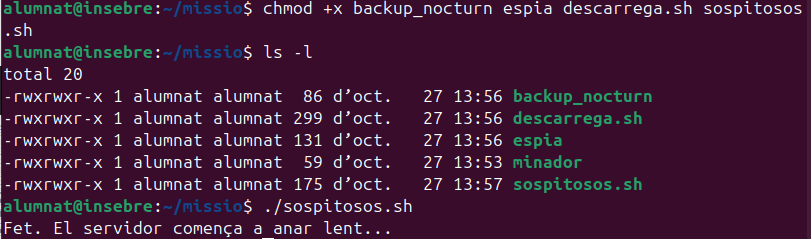
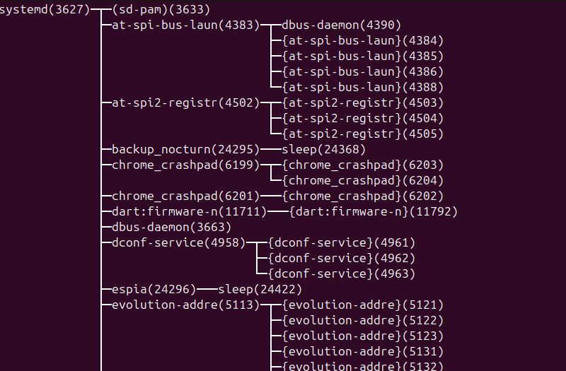
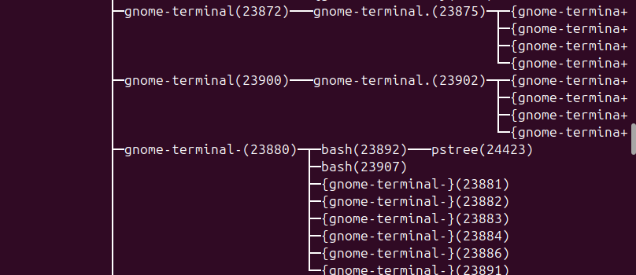
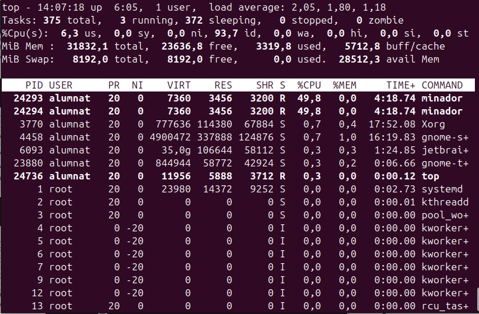

En aquest sprint treballem la gestió de processos
en el sistema operatiu Ubuntu. L'objectiu és
aprendre a identificar els processos en execució,
consultar-ne el consum de recursos, analitzar
la seva jerarquia i gestionar tasques en segon pla.
La pràctica es basa en una simulació anomenada
«El servidor va lent», en què diversos processos
provoquen una càrrega elevada al sistema.
Mitjançant les ordres del terminal investiguem
el seu comportament.
0. Preparació de la missió
Primer es prepara l'entorn de treball
i es creen els scripts que s'utilitzaran
durant la simulació.
Els processos principals de la missió són
minador,
espia i
backup_nocturn.
També es disposa d'un script per simular
una descàrrega i d'un altre per iniciar
els processos sospitosos.
Es comproven els permisos dels fitxers
perquè els scripts es puguin executar
correctament des del terminal.

Captura 1. Preparació dels scripts
i comprovació dels permisos d'execució.
En aquest apartat s'estudia la jerarquia
dels processos del sistema operatiu.
Cada procés té un identificador anomenat
PID i pot tenir un procés
pare, identificat pel PPID.
Amb l'ordre pstree podem
visualitzar els processos en forma d'arbre
i entendre les relacions entre pares i fills.

Captura 2. Visualització de l'arbre
de processos amb pstree.
A continuació s'observa amb més detall
la relació entre els processos iniciats
i la resta de processos del sistema.

Captura 3. Comprovació de la jerarquia
dels processos.
També s'identifiquen les dues instàncies
del procés minador que formen part
de la simulació.
L'ordre top permet consultar
en temps real els processos en execució
i els recursos que consumeixen.
En aquesta simulació, els dos processos
minador destaquen
pel seu consum elevat de CPU.
Això permet identificar-los com els
principals responsables de la càrrega
del sistema.

Captura 5. Anàlisi del consum de CPU
amb l'ordre top.
Aquesta eina és útil per detectar
processos que consumeixen massa recursos
i poden afectar el rendiment del servidor.